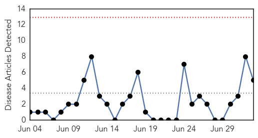
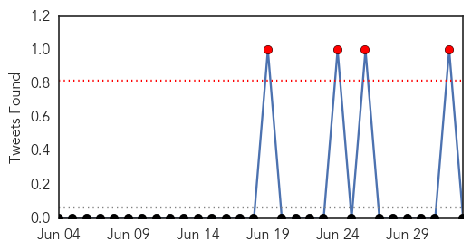
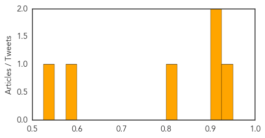

Influenza
30-Day Web Trend
0 alerts, 0 warnings

30-Day Twitter Trend
0 alerts, 0 warnings

Article Locations

Article Confidences

Top Articles:
- 0.999
- Novartis begins shipment of seasonal influenza vaccines to US market for the 2014-2015 season
- 0.998
- Scientists Have Developed a Flu Strain Capable of Evading Your Immune System
- 0.988
- UN: MERS deadly but most cases are preventable
- 0.987
- Health And Family, Lifestyle Features, The Philippine Star
- 0.987
- World Health Organization says most MERS cases are preventable, virus infection rates slowing
Top Tweets:
-
No tweets found for Jul 03, 2014
Measles
30-Day Web Trend
0 alerts, 0 warnings

30-Day Twitter Trend
0 alerts, 0 warnings

Article Locations

Article Confidences
Top Articles:
- 0.946
- Alarm raised over measles
- 0.910
- State Health Officials Prepare For Possible Measles Outbreak
- 0.907
- Measles Outbreak Puts Local Health Officials On High Alert
- 0.809
- Measles outbreak complicates 2 big upcoming Amish events
- 0.585
- Fifth German measle case confirmed
- 0.536
- Measles spread cause for concern at Buggy Showcase in Ohio
Top Tweets:
-
No tweets found for Jul 03, 2014